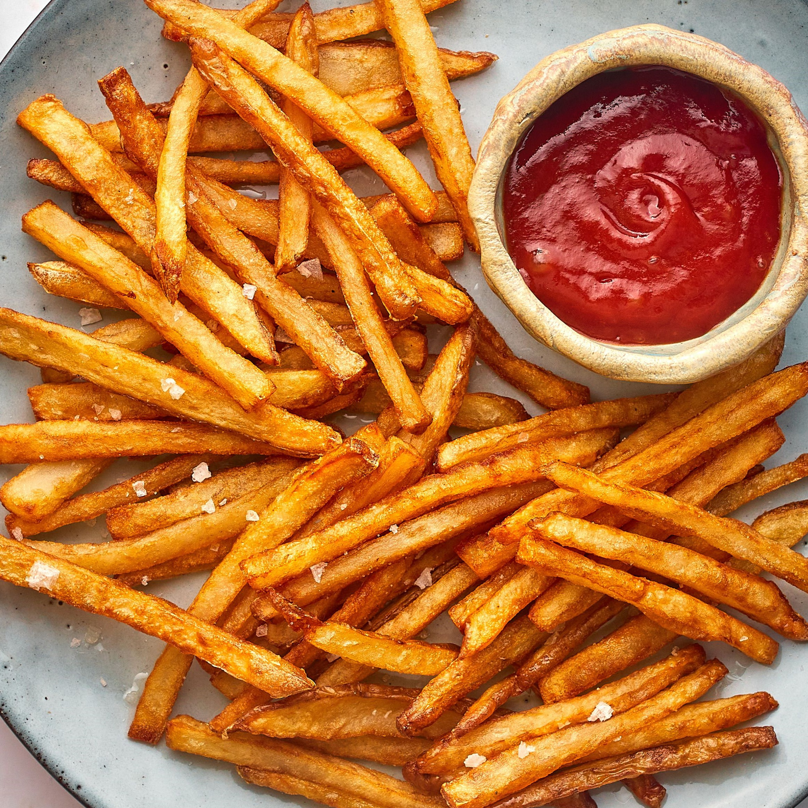
Kentang goreng renyah yang sering disajikan dengan berbagai saus seperti saus tomat, saus sambal, atau keju leleh.
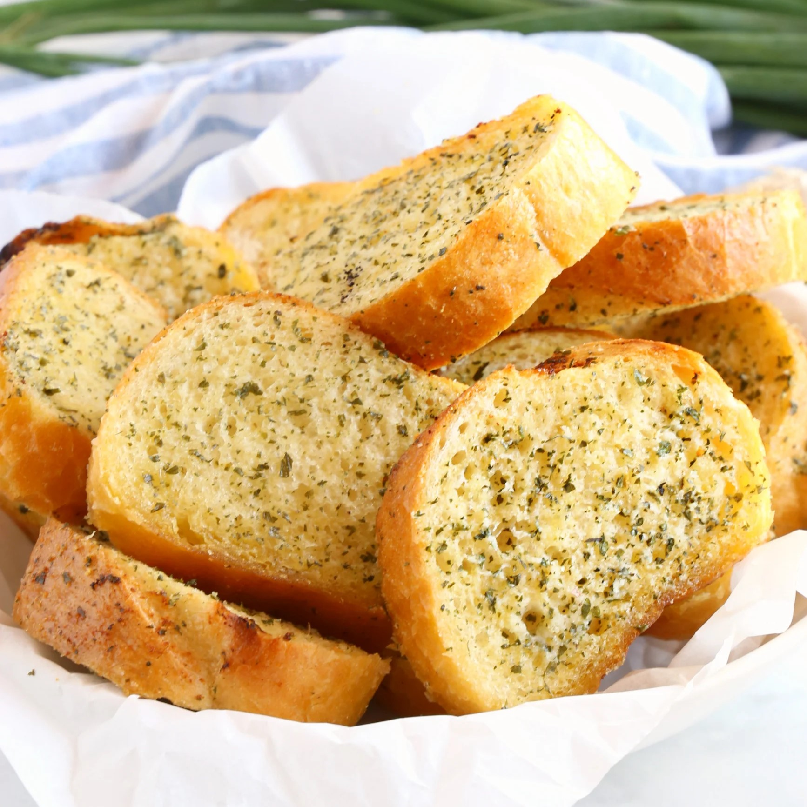
Roti dengan olesan mentega, bawang putih, dan parsley, dipanggang hingga harum dan renyah.
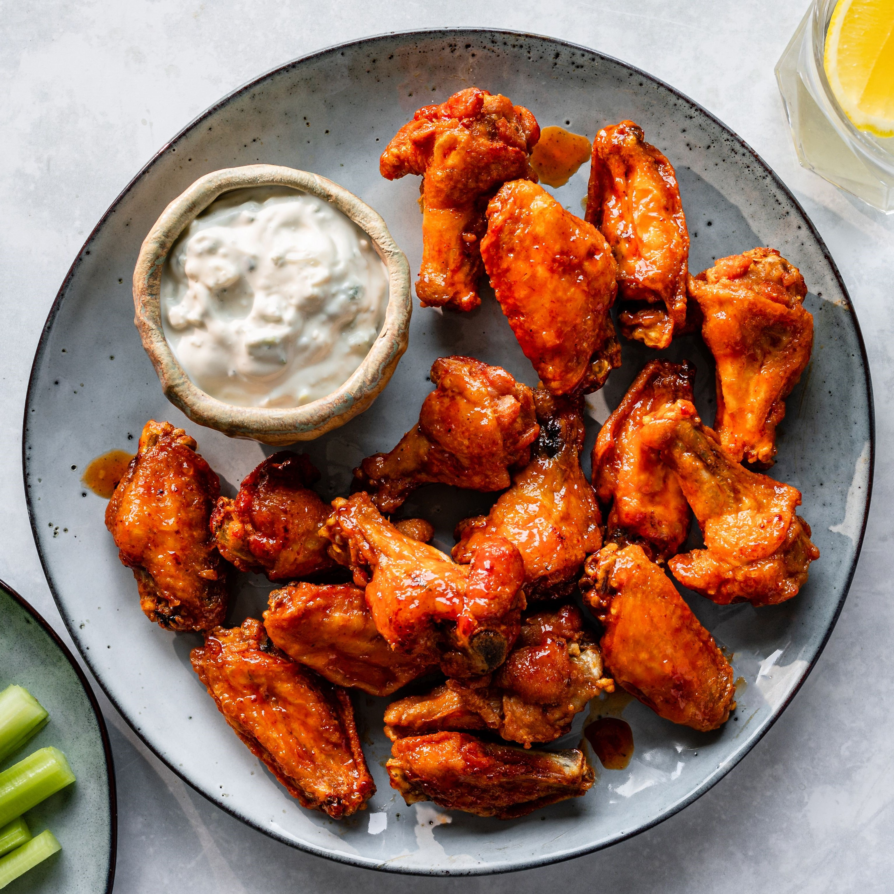
Sayap ayam goreng dengan berbagai pilihan saus seperti honey barbecue, spicy, atau garlic parmesan.
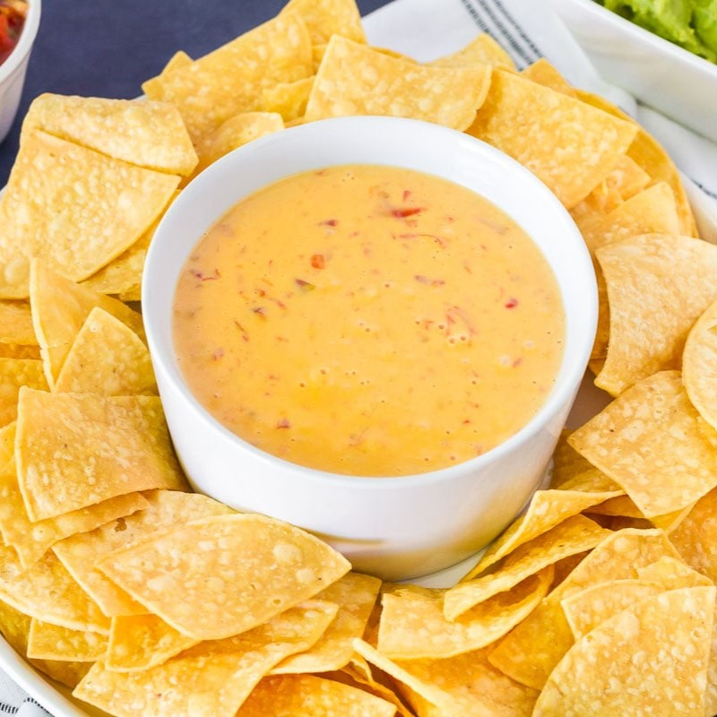
Keripik tortilla gurih yang disajikan dengan saus keju cair, salsa, atau guacamole.
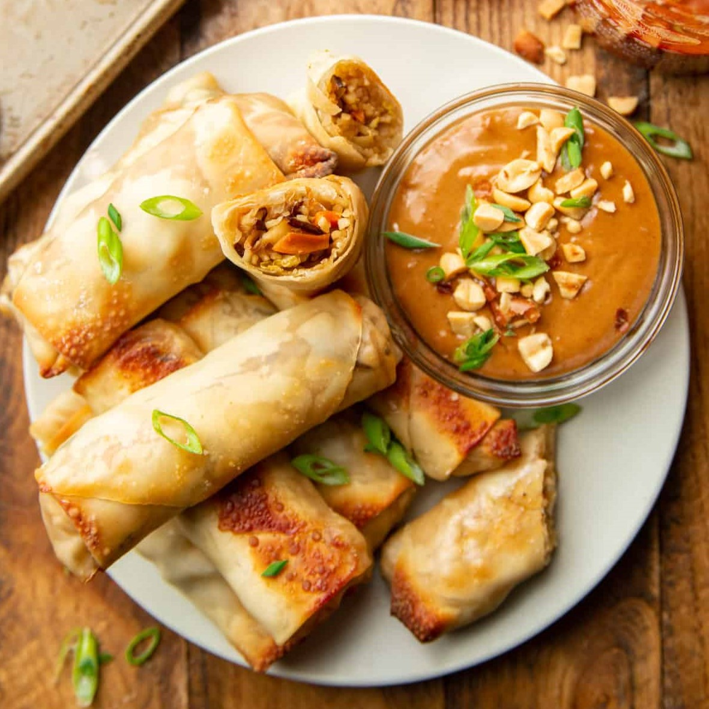
Lumpia goreng berisi sayuran, ayam, atau daging, disajikan dengan saus asam manis atau sambal.
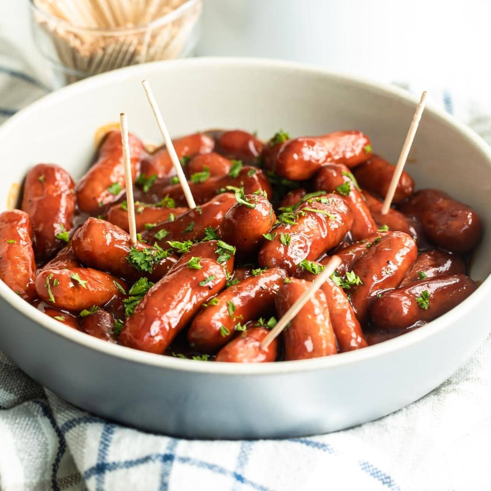
Sosis kecil yang digoreng atau dipanggang, sering disajikan dengan mustard atau saus sambal.
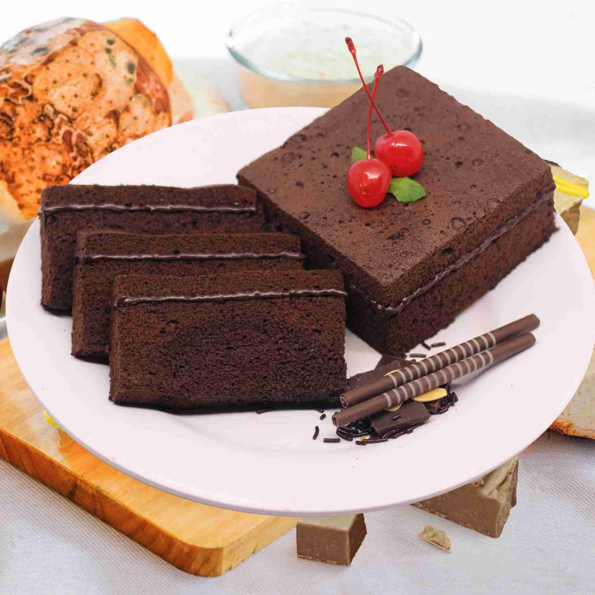
Kue cokelat lembut dan kaya rasa yang sering dihiasi dengan kacang, cokelat chips, atau es krim vanila.
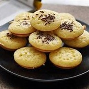
Kue mini yang lembut dengan rasa manis, sering dihias dengan topping seperti meses, keju, atau cokelat leleh. Biasanya dimasak setengah matang untuk tekstur creamy di dalamnya.
Pisang goreng dengan lapisan cokelat cair, memberikan rasa manis dan gurih yang memikat.
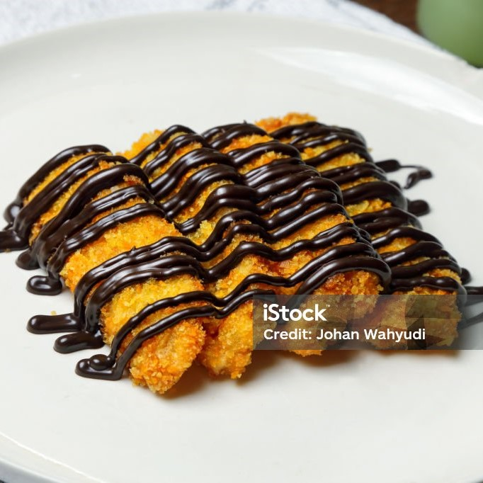
Pisang goreng dengan lapisan cokelat cair, memberikan rasa manis dan gurih yang memikat.
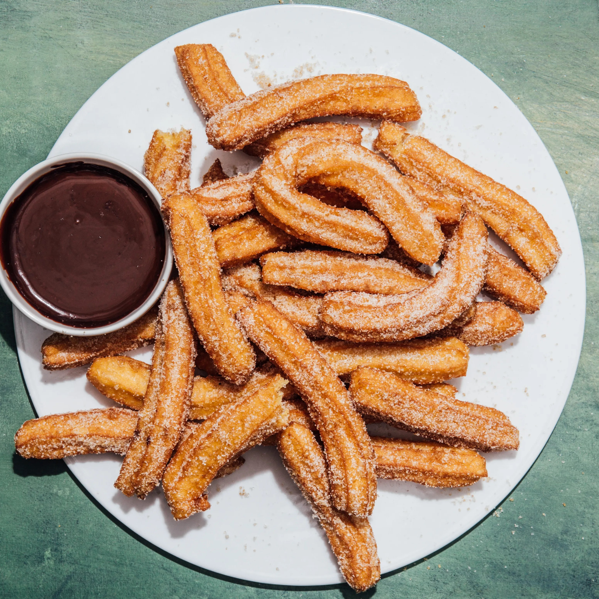
Kue berbentuk tongkat yang digoreng hingga renyah, dilapisi gula kayu manis, dan sering disajikan dengan saus cokelat atau karamel.
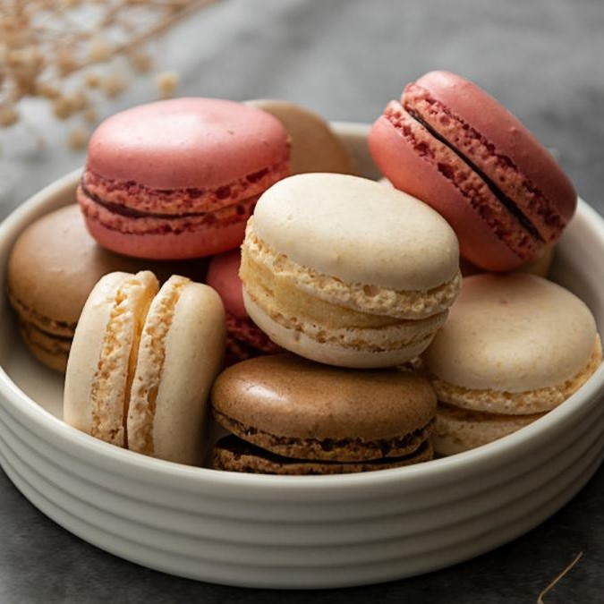
Kue kecil berbentuk bulat yang terbuat dari meringue, dengan isian krim, ganache, atau selai, memiliki tekstur lembut dan renyah.